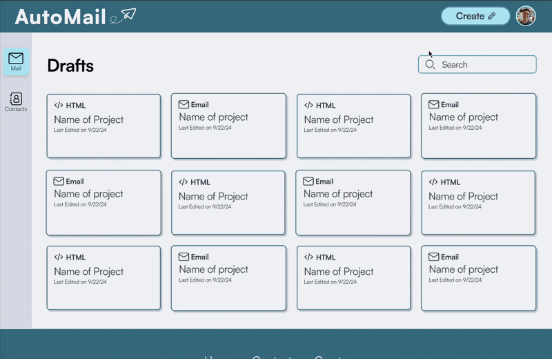
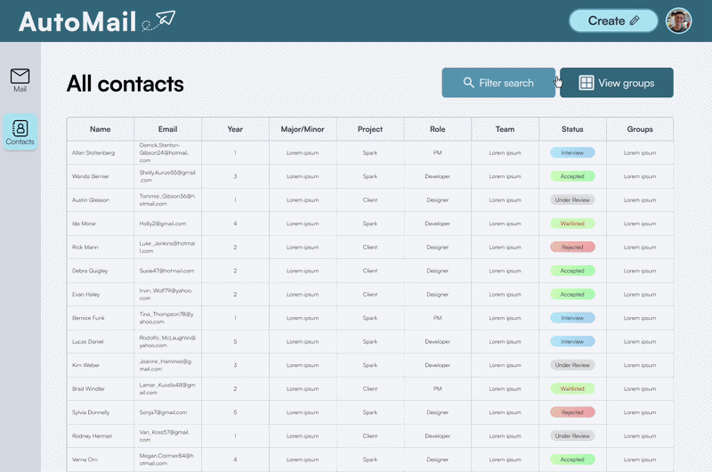
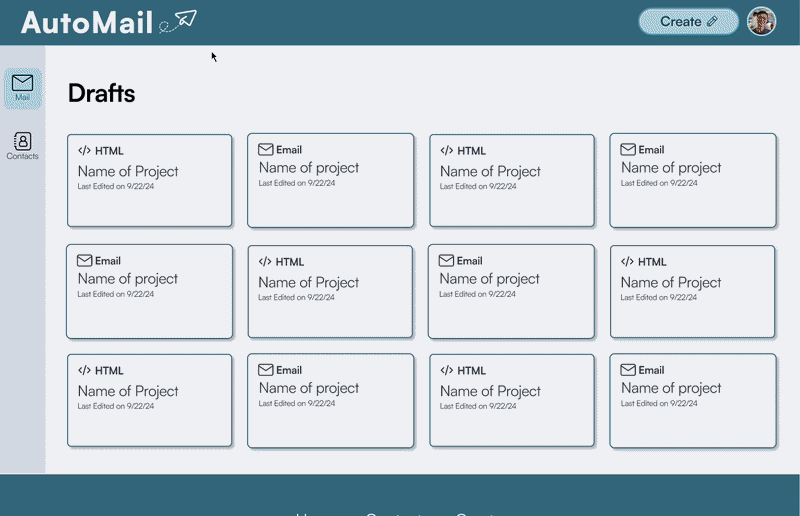
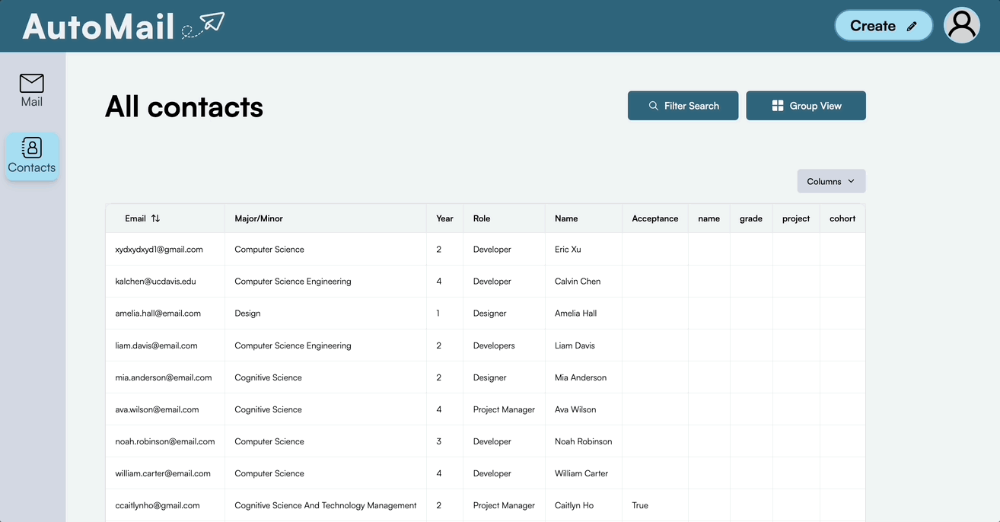
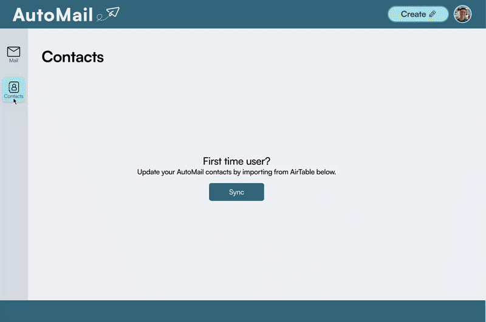
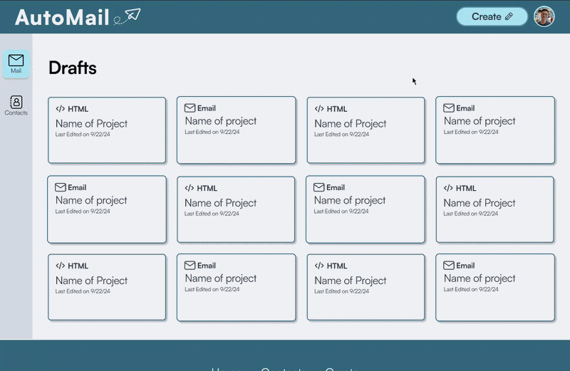
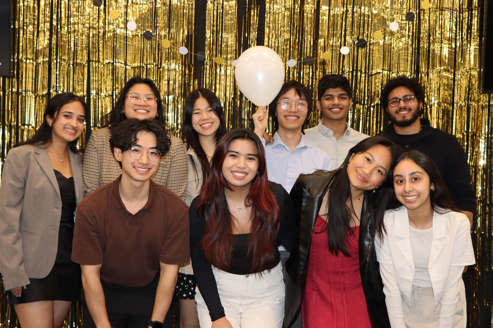

TL;DR
CodeLab’s President was pulling all-nighters personalizing and double-checking recruitment emails one by one, anxious about getting sensitive information wrong, and wishing for a central place where other board members could help without communication breaking down. That’s the workflow our team of 3 designers and 6 developers was asked to fix, with no client brief for how. I designed and built two of Automail’s core screens solo (the Contact Groups page and the main landing page) and helped set the project’s direction and lead its research when the team had no brief to work from.
Overview
Context
CodeLab, a student-run software and design agency at UC Davis, relies on personalized, high-volume email outreach for recruitment and marketing. That workflow was fragmented across Airtable, Mailchimp, and Gmail.
Problem
CodeLab’s outreach was split across Airtable, Mailchimp, and Gmail. Simple sends became slow and error-prone, right when recruitment cycles needed consistency most. Our team of 3 designers and 6 developers had no prior automation experience and no clear brief.
Impact
- Designed and solely owned two of Automail’s core screens — the Contact Groups page and the main landing page — building the shared component pattern and assembling both end-to-end
- Built the landing page mid-fi myself, and shaped the visual pivot away from CodeLab’s orange branding after raising the concern that it didn’t fit a developer-focused tool
- Helped set the project’s direction and scope with no client brief, drawing on my own experience with CodeLab’s broken workflow
- Helped conduct our stakeholder interview with CodeLab’s President — the research that grounded every feature the team shipped, including three I didn’t personally design
Research
Methods: a 10-person survey across Mailchimp, other automation tools, and manual Gmail users; a 45-minute stakeholder interview with CodeLab’s President, which I helped conduct and which surfaced the all-nighter workflow described above, plus the wish for “a central place” where other board members could help without communication breaking down.
Finding 1
Manual, disconnected tools created constant friction.
- No personalization at scale
- Repetitive re-syncing between Airtable and Mailchimp
- Inconsistent workflows across platforms
Finding 2
Existing tools weren’t built for CodeLab’s scale.
- Mailchimp’s audience caps broke down during peak recruitment
- Large lists (10k+) needed real structure, not a workaround
Finding 3
Users needed flexibility and simplicity.
- Power users wanted template control
- Non-technical members needed something that required no training
These findings directly justified every major feature that followed: the Airtable sync, the dual-editor template system, and the Contact Groups structure.
Define
Decision: how should recipient data be structured at scale?
Explored
Single Long List
× CutUnmanageable past a few hundred contacts, no segmentation.
→ Contradicted Finding 2 (large lists need dedicated structure).
Adopted
Selectable Contact Groups
✓ KeptMy design. Users organize synced Airtable data into named, reusable groups.
→ Grounded in Finding 2.
I designed and built this page solo, the screen most responsible for making CodeLab’s large-scale outreach feel manageable, not overwhelming. I also used the same email-type component to design and assemble Automail’s main landing page, which lists users’ sent and drafted emails. (See the first mid-fi version of this page in Ideation, below.)
Ideation
- Low-fi: sketched navigation, personalization, and sending flows. → Grounded in Findings 1 and 3.
- Mid-fi (old system): the team aligned on structure and sidebar organization, using an orange color scheme carried over from CodeLab’s branding. I built the landing page mid-fi myself; Contact Groups mid-fi was built by another designer on the team. → Grounded in Finding 2.
- High-fi (old system): built out full screens in the same orange, Mailchimp-inspired style
Old mid-fi
 midfi.png)
.png)
Old high-fi
.png)
.png)
Once high-fi existed, the mismatch was clear. I was one of the voices who raised the concern: the creative, brand-forward style didn’t fit a developer-focused, high-volume internal tool.
Explored
Orange, Brand-Matched Interface
× CutCut after already being built through mid-fi and high-fi.
Adopted
Cleaner, Simpler Interface
✓ KeptThe team went back through mid-fi and high-fi again toward a neutral visual direction, same functionality, better fit for how the team actually used the tool. I rebuilt the landing page mid-fi for this second round myself.
New mid-fi
.png)

New high-fi
.png)
Simplifying the Landing Page Flow
The old landing page, called “My Projects,” sent users to a new screen every time they created an email. Rebuilding the landing page mid-fi for the new design system, I simplified that flow into a popup instead of a full screen navigation.
Explored
“My Projects,” New-Screen Flow
× CutEvery new email pulled users away from their landing page context, adding an extra navigation step to a task users did constantly.
Adopted
Popup-Based Creation Flow
✓ KeptMy design. Users create emails without leaving the landing page, cutting a full screen transition out of the most repeated action in the product.
→ Grounded in Finding 3 (users needed simplicity, not extra steps).

Organizing at Scale
Phase 2 also added filters, tags, and viewing options to the mailing list experience, giving users a way to narrow thousands of contacts down to the group they actually needed for a given send.
→ Grounded in Finding 2 (large lists needed real structure, not a workaround).
Read the design process on Medium →A note on usability testing: with developer bandwidth limited late in the timeline, the team prioritized getting a high-functioning prototype into developers’ hands over running usability tests on the final designs — a tradeoff we flagged for the next team to pick up.
Solution
01 Contact Groups Page
Designed and built solely by me. Organizes large Airtable datasets into selectable recipient groups.
→ Grounded in Finding 2.

02 Landing Page
Designed and assembled solely by me. Automail’s main landing page, listing users’ sent and drafted emails, built on the same component pattern as Contact Groups. Email creation happens through a popup instead of a full screen navigation, cutting a step out of the product’s most repeated action.

03 HTML Template Editor
Designed by another designer on the team, grounded in research I helped conduct. Custom HTML, variable insertion, and real-time preview for power users.
→ Grounded in Finding 3.

04 Airtable Sync
Designed by another designer on the team, grounded in research I helped conduct. One-click sync, replacing the manual re-export/re-upload cycle.
→ Grounded in Finding 1.

05 Regular Template Builder
Designed by another designer on the team, grounded in research I helped conduct. A simplified editor for non-technical users.
→ Grounded in Finding 3.

Outcome
At final presentations, the team demoed Automail live: 100+ personalized emails sent in under 5 minutes, replacing a process that previously took board members roughly 8 hours of manual work per recruitment cycle. The team presented the finished product to around 100 CodeLab members.

Next Steps
- Conduct usability testing with CodeLab board members, cut this round due to developer bandwidth, and the first thing I’d prioritize with more time
- Interview CodeLab board members to surface edge cases
- Add microinteractions confirming key actions (syncs, sends)
- Add status indicators for large sends
- Clearer error states for new users
Reflection
01 — Understanding B2B Design
One of my first B2B/internal tools, where success means removing friction from a real workflow under real constraints, not delight or engagement.
02 — First Time Working Directly With Engineers
Learned to translate decisions like Contact Groups into terms that held up against real data constraints, and to catch misalignments early enough to still change course.
03 — Simple on the Surface, Complex Underneath
Strengthened my ability to lead design direction on tools that look simple but carry real complexity underneath.